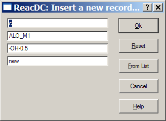

Previous Page Back to Start Page
(47) Adding another
sorption phase to the system (MUSIC model for gibbsite)
This tutorial
page shows how to add your own surface complexation model to the
existing GEMS modelling project.This process consists of the
following steps:
(i) defining the
sorbent and its surface structure (number of surface types, site types
on each surface type, and EDL models);
(ii) wirting down the stoichiometry of surface complexes and the
surface complexation reactions;
(iii) creating a set of ReacDC records for surface species in GEMS
project database;
(iv) creating a Phase record that links the ReacDC or DComp record for
the sorbent, ReacDC records for the surface species, and their
allocation to surface types and site types (with site densities), as
well as contains the sorbent's specific surface area, the area
fractions assigned to surface types, and the parameters of EDL model
for each surface type;
(v) extending the system definitions in the modelling project with the
new sorption phase;
(vi) calculating new sorption equilibria or re-calculating pre-existing
SysEq records; (re)running Process simulators for model titrations.
The steps (i)
to (iv) are to be performed in the "Thermodynamic Database" mode of
GEMS, the steps (v) and (vi) - in the "Computation of Equilibria" mode.
The setup of
a new sorption model will be illustrated here on the example of MUSIC
model of surface charge of gibbsite Al(OH)3 in NaNO3
electrolyte, which has only two inner-sphere and two outer-sphere
surface complexes. Details on the model can be found in papers by
Hiemstra and van Riemsdijk (1996, 2002) and in the supporting material here which describes
how the MUSIC model is recast into the GEM SCM framework using the
Pauling bond valence principle.
Gibbsite
surface exposes singly-coordinated Al-OH-0.5 species with
the bond valence of 0.5 and zero-plane charge of -0.5. This species is
protonated according to the reaction
Al-OH-0.5
+ H+ = Al-OH2+0.5
(1)
with logK(1) = 10.0 which is
independent of the site density parameter (for gibbsite, 8.15 nm-2
or 1.353 * 10-5 mol m-2).
The
outer-sphere adsorption of electrolyte is described with the reactions
Al-OH-0.5
+ Na+ = Al-OH-0.5Na+
(2)
Al-OH2+0.5 + NO3- = Al-OH2+0.5NO3-
(3)
with logK(2) = logK(3) = 0.1.
However, in
order to define the elemental stoichiometries of four surface species
involved in reactions (1), (2) and (3) and determine their standard
molal Gibbs energies Go,
two additional reactions are needed:
0.75 H2O
= Al-OH1.50
(4)
Al-OH1.50
+ 0.5H+ = Al-OH2+0.5
(5)
with logK(4) = 1.74436
(conventional) and logK(5)
= 5.3 obtained from GEM SCM fitting of titration data (details are given here) . The Al-OH1.50 species is needed
only to determine the standard molal Gibbs energy of the Al-OH2+0.5
surface species; hence, the Al-OH1.50
species
will only remain in the thermodynamic database, but it will not be
included in the SCM and in surface charge calculations.
Reaction (4)
defines the elemental stoichiometry O0.75H1.5
of the fictive Al-OH1.50 surface species.
Next, the O0.75H2+0.5
stoichiometry is defined through reaction (5) for the Al-OH2+0.5
surface species. Reaction (1) leads to the O0.75H-0.5 stoichiometry for
the Al-OH-0.5
surface
species. Finally, the elemental stoichiometries O0.75H2NO3-0.5
and O0.75HNa+0.5
of the two outer-sphere surface complexes can be determined from
reactions (2) and (3), respectively.
In this order of reactions (4), (5), (1), (2), (3), we can now create the ReacDC records to determine thermodynamic properties of gibbsite surface charge species in the GEMS project database.
In the main
GEMS dialog, select the "Computation of Equilibria" mode and in the
appearing list of modeling projects, select the "SorptionUL" project
that has been created before (see preceding pages of this screenshot
tutorial). Click the "Open Project" button which gets you in the "Gibbs
Energy Minimization Modelling Project" Dialog. There, click on the
"Back" button to get back into the GEMS main dialog and there click on
the "Thermodynamic Database" button to arrive at the "Thermodynamic
Database Management" dialog shown below. This procedure ensures that
all database files belonging to the "SorptionUL" modeling project are
properly linked and accessible.
In the above dialog, click on the "Dependent Components (ReacDC)"
button to open the ReacDC module window. There, click on the "Display
selected record"  toolbar button and in the
appearing list, select the "c:_ATS_:>OH@:nr:" record key:
toolbar button and in the
appearing list, select the "c:_ATS_:>OH@:nr:" record key:

Click "Ok" to get back to the ReacDC module window:
This existing
record can be used as a prototype for creating a fictive neutral
surface species on gibbsite according to reaction (4). To do this,
select the "Record" "New(Clone)..." menu command, change the record key
as shown below, and click "Ok" when ready:
This brings you in the "Step1" page of the ReacDC setup wizard. Make
sure that the class code of the newly-defined Dependent Component
Al>OH1.5@ is set to 'X' and the method codes for temperature and
pressure corrections are set as shown below:
When done,
click "Next >" to arrive at the "Step 2" page:
Here, check
that the number of dependent components in reaction is set to 2 (see
reaction 4 which involves two species). Click "Next >" to continue.
On the appearing "Step 3" wizard page, set the number of SDref
bibliography links to 1:
and click
"Finish" to continue. In the appearing list of ReacDC record keys to be
involved in the reaction, click "Clear All" (there is nothing to select
for reaction 4) and then "Ok". In the next list of DComp record keys to
be icluded, make sure that only water is selected, as shown below:
CLick "Ok" to get back to the ReacDC window. There, change the species name in the comment line to Al>OH1.5@, the formula line to O0.75H1.5@, and check that the logK value is set to 1.74436. Very important: in the SC_CF field, set the reaction stoichiometry coefficient for H2O@ to -0.75 according to the reaction (4). When ready, click on the "Calculate record data" toolbar button and save changes to database. The thermodynamic data will be recalculated as shown on the screenshot below:
The obtained
standard molar Gibbs energy -187.844 kJ/mol of the fictive Al>OH1.5@ species is
highlighted. Change the bibliodraphic reference (the lowermost two
fields) as shown below and save the record to database by clicking on
the "Save current record"  toolbar button.
toolbar button.
Now, we can
proceed with constructing the ReacDC record that defines stoichiometry
and thermodynamic properties of the protonated Al-OH2+0.5 inner-sphere surface
species according to reaction (5). The algorithm is the same as the
just conducted one: we clone any currently loaded record, make
necessary changes in the ReacDC wizard, select ReacDCs and/or DComps to
be involved in the reaction, then enter the newly-defined species
stoichiometry, reaction stoichiometry coefficients, logK and some
reaction effects (if there are any), re-calculate the data, and
save the record to the modelling project database.
Now, select
the "Record" "New(Clone)..." menu command, change the record key as
shown below, and click "Ok" when ready:
In the
appearing ReacDC setup wizards, set fields on "Step 1" page as shown
below, and click "Next >":
Click "Next
>" twice and then "Finish" to complete the setup wizard. In the
appearing ReacDC record key list, mark (with the mouse click) the
record key of the Al>OH1.5@ species that you have created before
(make sure that no other record keys are marked):
Click "Ok"
then, and in the appearing list of DComp record keys, mark the H+ species as shown
below (make sure that water H2O@ is de-selected):

CLick "Ok" to get back to the ReacDC process window. According to
reaction (5), set the comment line, the formula of newly-defined
surface species, the SC_DC reaction stoichiometry vector, the logK =
5.3 (in logKr[1] field), the S0r[0], the ab_[0] fileds :
Please, note
that logKr[0], G0r[0] and H0r[0] fields should also be set to "empty"
("---") values as shown above, otherwise the new reaction and dependent
component properties cannot be calculated. When all necessary data
fields are set, click on the
"Calculate record data" toolbar button and save changes to database.
The thermodynamic data will be recalculated as shown on the screenshot
below:
Save the
record to database by clicking on the "Save current record"
toolbar button. We are now ready for creating the next ReacDC
record for the Al-OH-0.5 inner-sphere surface species through reaction
(1).
Select the
"Record" "New(Clone)..." menu command, change the record key as shown
below, and click "Ok" when ready:

In the
appearing Reaction setup wizard, simply click "Next >" twice and
then "Finish". In the apperaring ReacDC record key list, clear all and
mark the "c:ALO_M1:-OH2+0.5:new:" record key, then
click "Ok". In the next, DComp record key list, make sure that the
aqueous proton H+ is the only marked record key, and click "Ok". In the
appearing ReacDC window, edit the comment line, the formula of
newly-defined species (must be "O0.75H-0.5"), set the correct reaction
stoichiometry coefficients (in the SC_DC column), then enter
the logK = 10.0 (logKr[1] field), clean other
fields like in the previous case, and re-calculate the ReacDC record.
If everything done right, you should see the following contents:
Save the record to database by clicking on the "Save current
record"
toolbar button. Next, we can create the ReacDC record
that defines the Al-OH-0.5Na+ outer-sphere surface complex through
reaction (2). Select the "Record"
"New(Clone)..." menu command, change the record key as shown below, and
click "Ok" when ready:
In the appearing Reaction setup wizard, change the class code to "Z outer sphere surface complex", then simply click "Next >" twice and then "Finish". In the apperaring ReacDC record key list, clear all and mark the "c:ALO_M1:-OH-0.5:new:" record key, then click "Ok". In the next, DComp record key list, make sure that the aqueous Na+ ion is the only marked record key, and click "Ok". In the appearing ReacDC window, edit the comment line, the formula of newly-defined species (must be "O0.75HNa+0.5"), set the correct reaction stoichiometry coefficients (in the SC_DC column), then enter the logK = 0.1 (logKr[1] field), clean other fields like in the previous case, check the ab_ field that should contain charges on zero- and beta EDL planes, and re-calculate the ReacDC record. Now, you should see the following window:
If the data are Ok, save the record to database and proceed with
creating the last ReacDC in our model of gibbsite surface charge, the
definition of Al-OH2+0.5NO3- outer-sphere surface species according to
reaction (3).
Select the
"Record" "New(Clone)..." menu command, change the record key as shown
below, and click "Ok" when ready:
In the
appearing
Reaction setup wizard, check that the class code is "Z outer sphere surface
complex", then simply click
"Next >" twice and then
"Finish". In the apperaring ReacDC record key list, clear all and mark
the "c:ALO_M1:-OH2+0.5:new:"
record key, then click "Ok". In the next, DComp record key list, make
sure that the aqueous NO3- ion is the only marked record key, and
click "Ok". In the appearing ReacDC window, edit the comment line, the
formula of newly-defined species (must be "O0.75H2N|5|O3-0.5"), set the
correct reaction stoichiometry coefficients (in the SC_DC column), then enter
the logK = 0.1 (logKr[1]
field), clean other fields like in the previous case, check the ab_
field that should contain charges on zero- and beta EDL planes, and
re-calculate
the ReacDC record. Now, you should see the
following information:
When done, save the record to database. We have now all the ReacDC
records for surface species on gibbsite and can proceed with defining
the "Gibbsite" sorption phase. Close the ReacDC module window to get
back to "Thermodynamic Database Management" dialog. There, click on the
"Thermodynamic Phases (Phase)" button and open the Phase module window.
In the Phase
window, execute the "Record" "Create..." menu command and enter the
following new Phase record key:
Click "Ok" when ready. In the appearing Phase setup wizard (Step 1
page), set the phase model codes as shown on screenshot below:
Click "Next
>" to continue setup of the new sorption phase. This brings you to
the "Step 2" page of the wizard. There, important setup items are
located in the lower part of the page. Set the checkbox on for the
consideration of surface complexation in this sorption phase; set the
number of surface types to 1, and the sorbent specific surface area to
20.3 m2/g:
Click "Next >" to continue setup. In the "Step 3" page, you can set
the number of bibliographic (SDref) links to 1 and click "Finish" to
complete the Phase setup wizard. In the appearing ReacDC record key
list, mark the four newly-created surface species, as shown below:
Do not mark
the fictive Al>OH1.5@ neutral surface species - it was needed only
to calculate thermodynamic properties of the four surface charge
species on gibbsite. Click "Ok" when ready. In the appearing DComp
record key list, mark gibbsite (sorbent) as shown below:
Click
"Ok" to complete selection of phase components and get back
to the Phase module window. There, click on the "Calculate Record
Data" toolbar button, save the record to database, and
reply "Yes" on the appearing question
Some data
fields on the Phase Page 1 window will change because some data will be
read from the ReacDC records. The page should look like this:
The table in
the lower part of the window shows the setup of surface complexation
model; some fields still need to be entered or changed. Let us examine
them from left to right.
The leftmost
PhDCC column contains codes of species involved in the phase. The last 'O' code against
gibbsite "Gbs" must be changed to 'Q' which tells the
program that gibbsite "Gbs" should be treated
as the sorbent, on whose surface the sites are located. The specific
surface area is visible above (20.3 m2/g).
The SAT_C[0]
column filled with 'L' characters contains
codes that select calculation of SACT (surface activity coefficient
terms) which replace the site balances used in other SCM approaches. 'L' means "Langmuir
(competitive) isotherm", which is underlying most SCMs including MUSIC
ones. Only surface species belonging to the same site type on the same
surface type will compete for sites.
Allocation of
species to surface types can be given in the "SAT_C[2]" column (default 0,
i.e. the first surface type; the allocated surface types can be seen on
Page 3 of the Phase window later on). In our case, there is nothing to
change because we will consider only one surface type on gibbsite, to
which the entered specific surface actually refers.
Allocation to
site types (within each surface type) is given in the "SAT_C[4]" column (default 0,
i.e. the first site type). In the case of gibbsite, there is also
nothing to change because the model is, in fact, single-surface
single-site.
Finally, the "SAT_C[3]" column defines
where the outer-sphere charge of surface complexes is assigned in the
framework of chosen EDL model. Since we choose the Basic Stern model,
the outer-sphere charge should be assigned to the "beta" plane (code 'b' or '1'). Therefore,
enter the 'b' code against the -OH-0.5Na+ and -OH2+0.5NO3- species.
Next to the
right, the "MaSDj" table contains
numerical parameters of the SCM setup. The most important parameter is
the site density ("MaSDj[0]" column). The site
density is a property of each site type and must be given the same
number for all species allocated to the same site type on the same
surface type. For the gibbsite surface, the value of 8.15 nm-2
is recommended; enter this value against all surface species.
The next
column "MaSDj[1]" contains unit
charges allocated to zero plane for all surface species. These charges
should have been collected from ReacDC records where we had entered
them previously into the "ab_[0]" data field. The "MaSDj[2]" column contains
unit charges of surface species assigned to outer EDL planes (beta- or
third plane, depending on the code in "SAT_C[3]" column). The
numbers were entered previously into "ab_[1]" field in ReacDC
records for surface complexes.
The "MaSDj[4]" column contains
dentateness of surface species (should be 1 for all). The remaining two
columns are not used in our SCM.
Enter also
the comment lines. Finally, this page of the Phase window should look
like that shown below.
Now, switch
to Page 3 for completing the surface complexation model setup. There,
find a "SCM_C" field which
contains the 'S' code (denotes the
Basic Stern EDL model) to be applied on our single surface type. Nex to
the right, the fraction of this surface type area relative to the whole
surface of the sorbent (in this case, 1) should be entered. In the "MsDt[0]" cell, the total
site density on the surface type is given (enter 8.15 nm-2).
The "MsDt[1]" field is not used
in Basic Stern EDL model - change it to 0. The "Cap_t[0]" field contains the
inner capacitance density C1 parameter (1 F/m2); change it to 0.9
F/m2 according to our model. The next feld (outer
capacitance density C2) is not used in BS model; the last field
(permanent charge density) should be 0 for amphoteric oxide surfaces.
Finally, the
Page 3 should look as shown below.
The Phase definition for the Basic Stern model of gibbsite surface
charge can now be saved to database. After this is done, we are ready
to proceed with sorption equilibria calculations. The next step is to
plug the new sorption phase into chemical system definitions in our
modelling project. To do this, close the Phase window and switch back
to the main GEMS dialog. There, click on the "Computation of
Equilibria" button, select the project "SorptionUL" in the appearing
list, and click on the "OpenProject" button. In the appearing dialog
click on the
"Yes for All" button. After some waiting, you should see the "Gibbs
Energy Minimization Modelling Project" dialog, which means that the new
sorption phase has been succesfully inserted into all SysEq records
contained in the project. These pre-existing records all need to be
re-calculated. Just open a record, find the newly-inserted "Gibbsite_an" sorption phase in
the phases tree, and de-select it by changing '+' to '-' to the right.
Then click on the "Calculate BCC"  toolbar
button and then calculate the equilibrium by clicking on the "Calculate
equilibrium state"
toolbar
button and then calculate the equilibrium by clicking on the "Calculate
equilibrium state"  toolbar button, finally
clicking "Accept" to save the updated records to database.
toolbar button, finally
clicking "Accept" to save the updated records to database.
New system
definitions (for modeling gibbsite surface charge) can be created from
scratch, as described in the next Tutorial page.